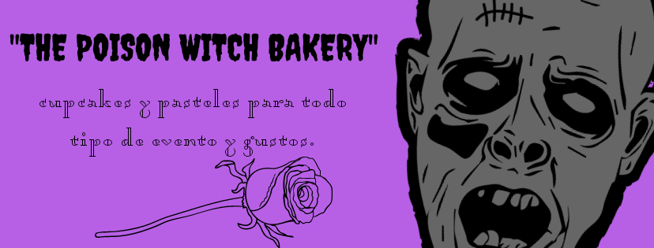

¡Bienvenido a the poison witch bakery!
En esta página encontrarás un poco de a lo que me dedico, mi pequeño negocio de respostería inicio con la pademia y la necesidad de apoyar a mi pareja ya que se quedó sin trabajo y tuvimos que adaptarnos, así que se me ocurrió empezar a hacer algo que me gudtaba mucho y así con poca práctica pero con muchas ganas empece a vender pastelitos, cupcakes y hasta pasteles de fondant, todo de manera casera pero ocn mucho corazón, espero disfruten su visita, vuelvan pronto.
